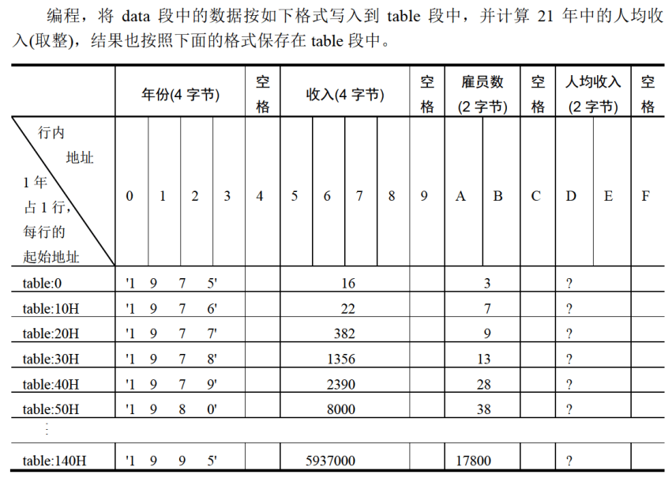
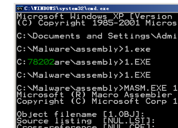
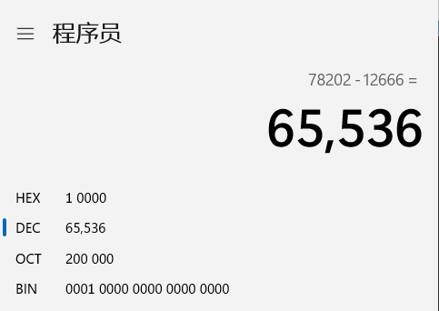
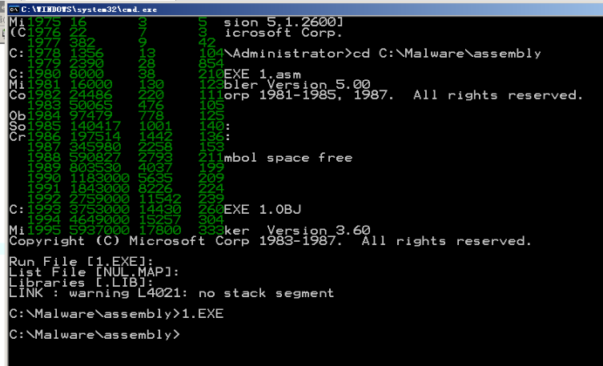
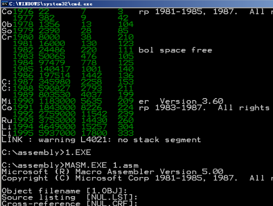

Project1
首先我们看一下lab7的结果！

其实我们可以看到，lab7的结果已经存在table段之中了。后面要做什么？把收入和雇员还有平均收入，搞成十进制的！然后，这些东西一起展示在屏幕上！
dtoc
assume cs:code,ds:data,ss:stack
data segment
db 10 dup(0)
data ends
stack segment
dw 16 dup(0) ;32字节
stack ends
code segment
start:
mov dx,1
mov ax,12666 ;要显示的数据
MOV BX,DATA
MOV DS,BX
mov si,0 ;ds:si指向字符串首地址
call dtoc ;将数据转为十进制字符
mov dh,8 ;在屏幕第几行开始显示
mov dl,3 ;在屏幕第几列开始显示
mov cl,2 ;显示的字符的颜色
call show_str
mov ax,4c00H ;程序返回
int 21H
dtoc: ;功能：将给定的word型数据转为十进制字符形式，存入data段，首地址ds:si
;参数：ax 指定的word数据
;返回：ds:si指向data段字符串首地址
PUSH AX
PUSH BX
PUSH CX
PUSH DX
PUSH SI
SUB BX,BX
PUSHREMAINDER:
MOV CX,0AH
CALL DIVDW
PUSH CX
MOV CX,DX
ADD CX,AX
INC BL
JCXZ POPREMAINDER
JMP SHORT PUSHREMAINDER
POPREMAINDER:
MOV CX,BX
S1: POP AX
ADD AL,30H
MOV DS:[SI],AL
INC SI
LOOP S1
POP SI
POP DX
POP CX
POP BX
POP AX
RET
divdw:
PUSH bx
push ax ;将被除数低16位先压栈保存。
mov ax, dx ;（ax）=（dx）
mov dx, 0000H ;
div cx ;被除数dx+ax（组合），除数cx。
mov bx, ax ;将H/N结果的商先保存在bx中，（bx）=0001H
pop ax ;将L值弹栈到ax
div cx
mov cx, dx ;返回值（cx）等于最终结果的余数
mov dx, bx ;最终结果高16位值=（bx）
POP bx
ret
show_str:
push cx
push bx
push ax
push bp
push di
mov ch,0
mov bp,cx ;保护cl
mov ax,0b800h ;显存空间首地址
mov es,ax
mov cl,dh
mov ch,0
dec cx
sub bx,bx ;先算行
s: add bx,00a0h
loop s
mov al,DL
MOV AH,0
ADD AX,ax
SUB AX,2 ;再算列
MOV DI,ax
change: mov cl,DS:[si]
mov ch,0
jcxz ok
mov al,ds:[si]
mov es:[bx+di],al
mov ax,bp
mov byte ptr es:[bx+di+1],al
inc SI
ADD DI,2
jmp short change
ok: pop di
pop bp
pop ax
pop bx
pop cx
ret
code ends
end start

是这么个结果

可见改的没毛病。
答案
 惨痛，用了个缓冲区，忘了清空了,注意那个854，那是错误答案。
assume cs:code,ss:stack
data segment
db ' ',0
data ends
stack segment
dw 16 dup(0) ;32字节
stack ends
datasg segment
db '1975', '1976', '1977', '1978', '1979', '1980', '1981'
db '1982', '1983', '1984', '1985', '1986', '1987', '1988'
db '1989', '1990', '1991', '1992', '1993', '1994', '1995'
dd 16, 22, 382, 1356, 2390, 8000, 16000, 24486, 50065, 97479
dd 140417, 197514, 345980, 590827, 803530, 1183000, 1843000
dd 2759000, 3753000, 4649000, 5937000
dw 3, 7, 9, 13, 28, 38, 130, 220, 476, 778, 1001, 1442, 2258
dw 2793, 4037, 5635, 8226, 11542, 14430, 15257, 17800
datasg ends
table segment
db 21 dup ('year summ ne ?? ')
table ends
code segment
start:
mov ax,datasg
mov es,ax ;data绑es
mov ax,table
mov ds,ax ;table绑ds,这样寻址的时候不用写段地址
sub bx,bx
sub si,si
mov di,168 ;这个必须自己算一下，4*21+4*21
;这里本来想全用si，但是问题在于si加的话，一个收入是DWORD，一个人数是WORD，直接加会导致跳过一个人数，等于你1976对应的人是1977的，1977对应的人是1979的。没办法只能用新的寄存器存了
mov cx,21
s: mov ax,es:[si]
mov [bx].0h[0],ax
mov ax,es:[si+2]
mov [bx].0h[2],ax ;存年份，四个byte，存两次即可
mov ax,es:[di]
mov [bx].10[0],ax ;人数是字，直接存
mov ax,es:[si+84]
mov [bx].5[0],ax
mov dx,es:[si+86]
mov [bx].5[2],dx ;收入是双字，要存两次，然后为了和后面的除法对应上，直接存dx和ax里,这里要注意小端存储
;这里可以看到，一个年份和对应的收入，其实大小都是4字节的。这样si可以一次循环内使用。
div word ptr es:[di] ;指明除数的长度
mov [bx].13[0],ax
add bx,10h
add si,4
add di,2
loop s
;底下就是新的内容了
mov ax,data
mov ds,ax
;ds绑定table
mov ax,table
mov es,ax
;es绑table
mov cx,21
SUB BX,BX;计数器
sub si,si
sub di,di
convert:
sub si,si
push cx
mov cx,4
year:
;挪年份进去
mov al,es:[di]
mov ds:[si],al
inc si
inc di
loop year
inc di
inc si
;总收入
mov dx,es:[di+2]
mov ax,es:[di]
call dtoc
add di,5
add si,8
mov dx,0
mov ax,es:[di]
call dtoc
;人
add di,3
add si,7
mov dx,0
mov ax,es:[di]
call dtoc
;人均
;其实上边这几个部分，精心设计一下能写成循环，代码能好看一点点，但是太麻烦了，不写了。
mov si,0 ;ds:si指向字符串首地址
mov dh,BL ;在屏幕第几行开始显示
mov dl,3 ;在屏幕第几列开始显示
mov cl,2 ;显示的字符的颜色
call show_str
;这里还要注意，每次展示以后都要重新清空
mov cx,24
SUB SI,si
clearbuf:
mov BYTE ptr ds:[si],20h
INC si
loop clearbuf
sub di,13
add di,10H
inc bl
pop cx
loop convert
mov ax,4c00H ;程序返回
int 21H
dtoc: ;功能：将给定的word型数据转为十进制字符形式，存入data段，首地址ds:si
;参数：ax 指定的word数据
;返回：ds:si指向data段字符串首地址
PUSH AX
PUSH BX
PUSH CX
PUSH DX
PUSH SI
SUB BX,BX
PUSHREMAINDER:
MOV CX,0AH
CALL DIVDW
PUSH CX
MOV CX,DX
ADD CX,AX
INC BL
JCXZ POPREMAINDER
JMP SHORT PUSHREMAINDER
POPREMAINDER:
MOV CX,BX
S1: POP AX
ADD AL,30H
MOV DS:[SI],AL
INC SI
LOOP S1
POP SI
POP DX
POP CX
POP BX
POP AX
RET
divdw:
PUSH bx
push ax ;将被除数低16位先压栈保存。
mov ax, dx ;（ax）=（dx）
mov dx, 0000H ;
div cx ;被除数dx+ax（组合），除数cx。
mov bx, ax ;将H/N结果的商先保存在bx中，（bx）=0001H
pop ax ;将L值弹栈到ax
div cx
mov cx, dx ;返回值（cx）等于最终结果的余数
mov dx, bx ;最终结果高16位值=（bx）
POP bx
ret
show_str:
push cx
push bx
push ax
push bp
push di
push es
mov ch,0
mov bp,cx ;保护cl
mov ax,0b800h ;显存空间首地址
mov es,ax
mov cl,dh
mov ch,0
sub bx,bx ;先算行
s2: add bx,00a0h
loop s2
mov al,DL
MOV AH,0
ADD AX,ax
SUB AX,2 ;再算列
MOV DI,ax
change: mov cl,DS:[si]
mov ch,0
jcxz ok
mov al,ds:[si]
mov es:[bx+di],al
mov ax,bp
mov byte ptr es:[bx+di+1],al
inc SI
ADD DI,2
jmp short change
ok: pop es
pop di
pop bp
pop ax
pop bx
pop cx
ret
code ends
end start

成功！
有点儿难度，自己在写之前要想清楚，不然调起来很费劲。